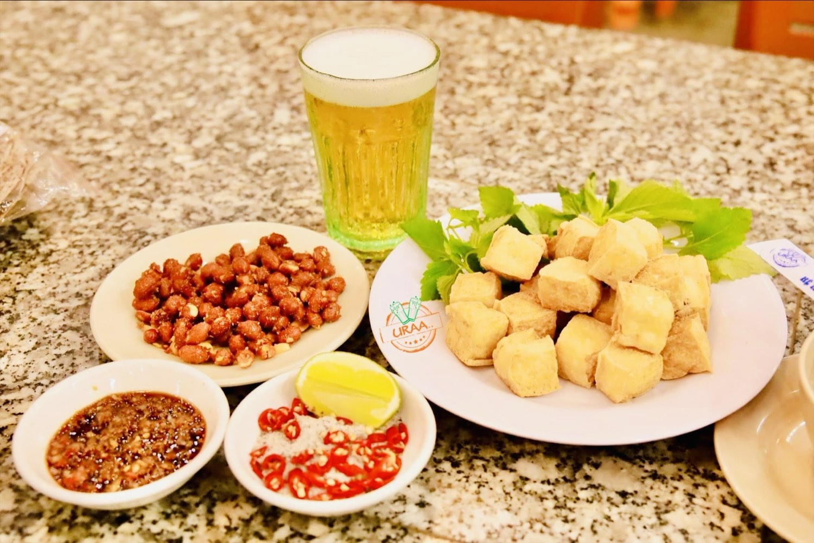
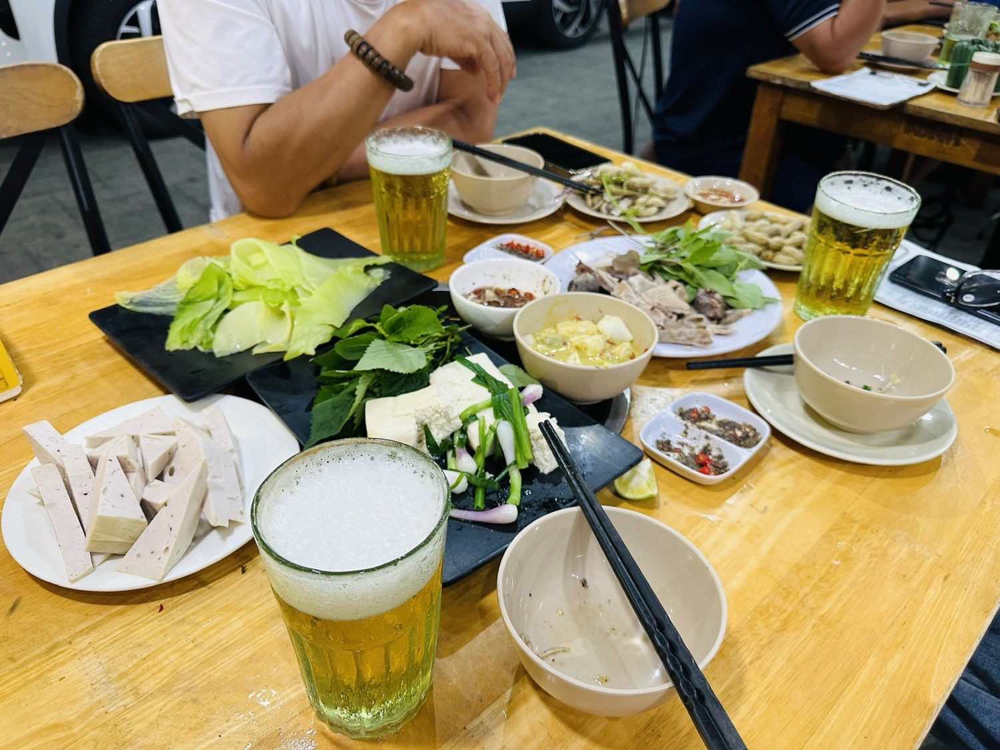

5 món Bắc đáng thử ở Nha Trang khi nhớ vị quê
Người Bắc vào Nha Trang sống, ăn gì cũng được — trừ một thứ khó thay: cái vị quê. Món ở đây ngon, nhưng thường ngọt hơn một nhịp. Ăn mãi rồi thèm một bữa đúng vị mình lớn lên cùng.

Combo quen thuộc nhất ở quán tôi: một vại bia hơi, đĩa đậu rán còn nóng, đĩa lạc, bát nước chấm.
Tôi mở quán bia hơi Hà Nội ở Nha Trang từ 2022, cũng vì cái thèm đó của chính mình. Bài này tôi kể thật 5 món người Bắc hay gọi nhất — và một chuyện về khẩu vị mà tôi vẫn giữ, dù nhiều người khuyên nên đổi.
1. Đậu phụ rán chấm mắm tôm — món giản dị nhất, khó làm nhất
Nghe thì đơn giản: đậu cắt quân cờ, rán vàng, ăn kèm tía tô. Nhưng đây lại là món tôi soi kỹ nhất mỗi ngày.
Đậu phải vàng giáp vỏ mà bên trong còn mềm, còn nóng. Nguội một chút là mất nửa cái ngon. Đi kèm phải có mắm tôm đánh nổi bọt với chanh ớt — ai không ăn được mắm tôm thì nước mắm tỏi ớt. Với dân bia hơi, đây là món mở màn kinh điển, gọi cùng đĩa lạc là đủ ngồi cả buổi.
2. Nem bùi Bắc Ninh và nem chua Thanh Hoá
Hai món này tôi để trong nhóm khai vị vì lý do rất thực tế: khách vừa ngồi xuống là có cái nhắm ngay, không phải chờ bếp.
Nem bùi ăn với lá sung, chấm tương ớt. Nem chua thì bóc là ăn. Người Bắc xa quê hay gọi hai món này trước tiên — không phải vì đói, mà vì nó gợi đúng cái không khí ngồi quán ở nhà.
3. Trứng chiên lá mơ, trứng chiên ngải cứu
Trong Nam ít quán có. Ngoài Bắc thì gần như quán bia nào cũng phải có.
Lá mơ hơi hăng, ngải cứu hơi đắng — hai vị mà người quen rồi thì thấy dễ chịu, người lạ thì thấy khó. Tôi vẫn giữ trong menu dù nó không phải món bán chạy nhất, vì đây đúng là thứ người Bắc tìm.

4. Ốc om chuối đậu, lươn om chuối đậu
Đây là món khiến nhiều người ngồi im một lúc khi ăn miếng đầu tiên.
Chuối xanh, đậu phụ, mẻ, nghệ, tía tô — nấu đúng thì nước sánh, thơm mẻ, không ngọt. Nấu sai thì thành món om ngọt, ăn xong không nhớ gì. Món này với tôi là phép thử tay nghề của bếp: bếp nào nấu được nồi om chuối đậu ra đúng vị Bắc thì các món khác thường cũng ổn.
5. Lẩu riêu cua bắp bò
Món cho bàn đông. Nước riêu chua thanh, gạch cua nổi, ăn kèm bắp bò, đậu rán, rau muống chẻ.
Trời Nha Trang nóng, nhiều người nghĩ ai ăn lẩu. Nhưng cứ tối trời mưa hoặc mấy hôm gió mùa về, bàn nào cũng gọi. Vị chua của riêu hợp với bia hơi hơn tôi tưởng.
Vì sao tôi không nêm ngọt lại cho hợp khẩu vị trong này
Đây là chuyện tôi muốn nói thẳng.
Có người khuyên tôi: đã bán ở Nha Trang thì nêm cho hợp khẩu vị người ở đây, ngọt thêm một chút, khách đông hơn. Nghe rất có lý về mặt bán hàng.
Nhưng nếu tôi làm thế, quán tôi thành một quán ăn bình thường như bao quán khác — và cái lý do duy nhất để người ta lặn lội tìm đến sẽ biến mất. Người tìm bia hơi Hà Nội không tìm một bữa ngon chung chung. Họ tìm đúng một cái vị.
Bia hơi Hà Nội thì phải là vị Bắc. Ngọt lên một nhịp là mất khách quen, mà chưa chắc được khách mới.
Nên trong bếp nhà tôi có một luật: món nào lỡ nêm ngọt là phải chỉnh lại ngay. Tôi vẫn đi ăn thử món của chính quán mình mỗi tuần, và góp ý thẳng với anh em bếp. Việc này không có điểm kết thúc — làm ăn uống là ngày nào cũng phải giữ.
Tôi thà giữ một quán làm đúng vị, còn hơn chạy theo số lượng như giai đoạn tôi từng có sáu cơ sở.
Gọi thế nào cho đúng kiểu bia hơi
Nếu anh/chị lần đầu ngồi quán bia hơi, tôi gợi ý thế này:
- Vào bàn gọi ngay đậu rán + lạc + một vại bia. Đồ nguội có sẵn, không phải chờ.
- Rồi mới gọi món chính — một món om hoặc một món xào, thêm đĩa rau.
- Bia hơi uống ngay khi rót. Đây là loại bia không để lâu được: bọt bám thành ly, uống lúc còn mát mới đúng vị. Để nửa tiếng là hỏng.
- Bàn đông thì kết bằng nồi lẩu. Bàn hai ba người thì thôi, đủ rồi.
Về giá, quán tôi định vị bình dân: bia hơi tính theo ly, món khai vị và món rau ở mức phải chăng, món chủ lực và lẩu cao hơn. Tôi để giá công khai trên menu và niêm yết tại bàn — anh/chị xem trực tiếp cho chuẩn, vì giá có thể thay đổi theo thời điểm.
Quán ở đâu, và ai thì hợp
Quán nằm ở tầng một chung cư nhà ở xã hội khu VCN Phước Long 2, đường số 28, khu đô thị Phước Long — chân đế toà nhà nên chỗ để xe rộng, dễ vào. Mở cửa từ 10h sáng đến 11h đêm. Nếu đi đông, anh/chị gọi trước giúp tôi để bếp chuẩn bị.
Nói thật luôn cho công bằng: quán tôi hợp với người thích ngồi lai rai, nói chuyện, ăn vị Bắc. Còn ai tìm không gian sang trọng, yên tĩnh, view biển — thì Nha Trang có nhiều chỗ hợp hơn, tôi không nhận là mình hợp.
Người Bắc xa quê thì tôi tin anh/chị sẽ thấy quen ngay từ vại bia đầu tiên. Đó cũng chính là lý do tôi mang bia hơi Hà Nội vào đây.
"Rồi, ngày mới tốt lành nhé."
Sống tử tế · Kiếm tiền hạnh phúc · Cho đi giá trị
Đặt bàn trước để bếp chuẩn bị kịp
Nhắn Zalo hoặc gọi 0869 668 638 — báo giúp tôi số người và giờ đến. Đi đông hoặc gọi món hải sản theo mùa thì nên đặt trước một buổi.
Đặt bàn qua Zalo